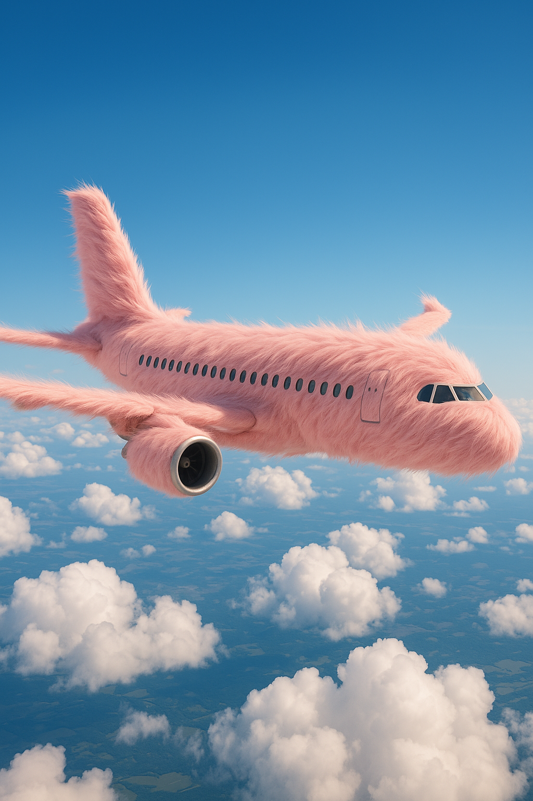

AI Image & Video Portfolio
Explore the AI images and videos I've created
Image and Video
Image Preview
A cute, anthropomorphic cat vlogging in modern Dubai. The cat is standing on two legs, wearing sunglasses and a small backpack, holding a selfie stick with a smartphone attached. Iconic Dubai landmarks are in the background.
Image Preview

The texture of the fur is detailed and lifelike, with sunlight casting smooth highlights and soft shadows across the surface. The plane is mid-air, with realistic sky and clouds in the background — vibrant blue sky, scattered cumulus clouds below. The scene is cinematic and whimsical, blending realism with surreal charm. The airplane windows and engines are still visible, contrasting subtly with the furry exterior.
Image Preview
A dream home in the bc canada forests with a creek next to it, a loft style house with floor to ceiling windows in the front and shaped like a geodesic dome with skylights. Near Home add some birds and animals.
Video Preview
Your browser does not support the video tag.
A playful orange tabby cat sitting in a cornfield. It plays with corn kernels on a wooden table, while behind it, the farmhouse and tall corn stalks create a rustic, peaceful scene.
Video Preview
Your browser does not support the video tag.
Star Wars style stormtroopers invading a modern office, pastel theme.
Video Preview
Your browser does not support the video tag.
Star Wars–style stormtroopers invade a sleek modern office, bathed in soft pastel hues of pink, blue, and mint. Their white armor gleams against the minimalist décor — glass desks, glowing screens, and stylish chairs. The troopers move with purpose as stunned office workers watch, creating a surreal blend of sci-fi tension and dreamy modern design.
Video Preview
Your browser does not support the video tag.
A green snake glided through the grass, its scales shining like emerald glass. Nearby, a cat watched, tail twitching with playful curiosity. Instead of fear or fight,the snake swayed gently, and the cat pawed at the air. For a brief, golden moment, the green snake was playing with the cat—a strange, tender dance of nature’s opposites.